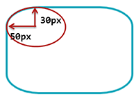

Coins arrondis
La propriété border-radius
est un raccourci qui permet d'arrondir les angles des 4 coins d'une
boîte.
On peut affecter 1, 2, 3 ou 4 valeurs à la propriété border-radius .
h1 { border-radius: 5px; }
h2 { border-radius: 4px 8px; }
h3 { border-radius: 5px 6px 7px 8px; }
raccourci border-radius
Remarque
: la forme avec 3 valeurs est rarement utilisée : le coin haut à
gauche aura la 1ère valeur, les coins haut à droite et bas à gauche
auront la 2ème valeur et le coin bas à droite aura la 3ème valeur.
La valeur donnée pour les angles est le rayon du cercle qui
sert à faire l'arrondi.
rayon de l'arrondi
Si on veut définir les coins individuellement on peut utiliser border-top-left-radius ,
border-top-right-radius ,
border-bottom-right-radius
et
border-bottom-left-radius
Tester les bords arrondis
Coins individuels à essayer :
Fichier CSS : styles.css
h3 {
border: 8px double red;
border-radius: 10px;
background: black;
color: white;
padding: 5px;
}
.p1 {
border-left: 20px solid cyan;
border-top-left-radius: 20px;
}
/* on peut arrondir les coins d'une image */
img {
vertical-align: middle;
border-radius: 20px;
}
Coins en ellipse
Il est possible de définir des arrondis en
ellpise en donnant 2 valeurs pour un même coin :
la valeur du rayon horizontal,
la valeur du rayon vertical.
h1 { border-top-left-radius: 50px 30px; }

rayons de l'ellipse
Si on veut utiliser la propriété raccourci border-radius ,
la syntaxe est la suivante :
h1 { border-radius: 5px / 10px; }
h2 { border-radius: 4px 8px / 10px 20px ; }
h3 { border-radius: 10px 15px 20px 25px / 11px 12px 13px 14px; }
rayons de l'ellipse avec raccourci
border-radius
Exemple : coins en ellipse
<!DOCTYPE html>
<html lang="fr">
<head>
<meta charset="UTF-8">
<title>Les CSS</title>
<link href="styles.css" rel="stylesheet">
</head>
<body>
<h3>L'Arrière des Etoiles</h3>
<p class="p1">Les CSS sont l'arme secrète de la Force !</p>
<p class="p1">Tu veux savoir les utiliser ?
Envoie CSS au 7 1718.</p>
<div>
<p><img src="../exemples/img/yoda.jpg">
Le côté obscur des CSS redouter tu dois.</p>
<p><img src="../exemples/img/darkv.jpg">
Les CSS ont vraiment transformé ma vie.</p>
<p><img src="../exemples/img/gandalf.jpg">
Bien sûr, moi aussi j'utilise les CSS !</p>
</div>
</body>
</html>
Fichier CSS : styles.css
h3 {
border: 2px solid red;
border-radius: 40px / 20px;
padding: 5px;
text-align: center;
}
.p1 {
border-left: 20px solid cyan;
border-top-left-radius: 10px 30px;
}
/* on peut arrondir les coins d'une image */
img {
vertical-align: middle;
border-radius: 20px / 40px;
}